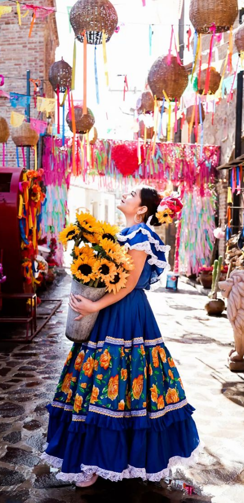
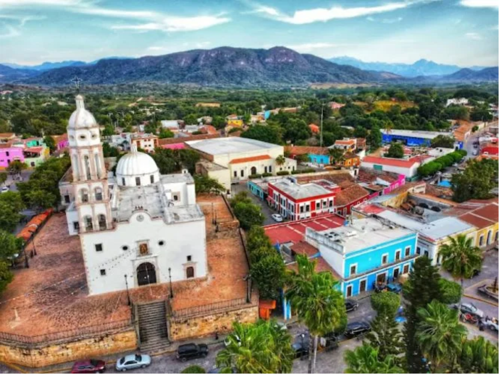
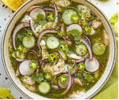

| Sinaloa ocupa un lugar de la mayor importancia dentro de la geografía mexicana. Lo más sabido es que su conjunción de costas, valles y serranía le dotan de una variada y potente vocación productiva, pero es también una región donde la cultura y el arte se despliegan de manera cotidiana. |
|
 |
Cosalá
Cosalá, un Pueblo Mágico en la Sierra Madre Oriental, destaca por su rica historia minera y su belleza natural. Fundado en 1562, ofrece atractivos como una vegetación exuberante, sus festividades, gastronomía y artesanía, como la talabartería y alfarería, que reflejan la fusión de tradiciones prehispánicas y españolas, convirtiéndolo en un destino único lleno de historia y cultura. |
Más pueblos mágicos
|

|
Comunidad Mayo
El Pueblo Mayo habita en el noroeste de México, al sur del estado de Sonora y al norte de Sinaloa. En Sinaloa, sus comunidades se localizan en los municipios de Ahome, El Fuerte y Guasave. La lengua yoreme que habla el Pueblo Mayo forma parte de la familia yuto-azteca. |
Más comunidades indígenas
|

|
Banda sinaloense
Es quizás el símbolo cultural más reconocido de Sinaloa. La banda (con tubas, trombones, clarinetes y percusión) nació en Mazatlán y El Fuerte a finales del siglo XIX, con fuerte influencia de bandas militares alemanas. Hoy es un fenómeno que trasciende fronteras. |
Más tradiciones
|
|
 |
El Aguachile
El platillo más representativo de Sinaloa, un manjar de mariscos que celebra la frescura y la cercanía al océano. Los orígenes del aguachile se remontan a la sierra de Sinaloa, donde en sus inicios se preparaba con carne machacada en agua hirviendo a la que se le agregaban algunos chiles chiltepin con los que se le daba un toque picoso. |
Más gastronomía
|